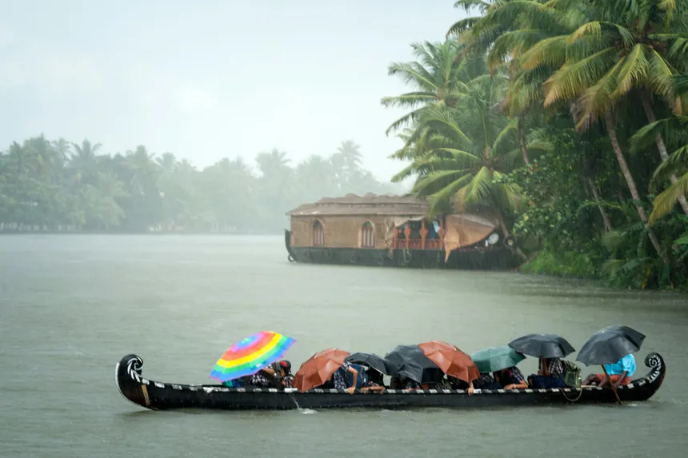

🌴 Kerala: God's Own Country
- Nestled between the Western Ghats and the Arabian Sea, Kerala is a lush paradise of backwaters, spice gardens, and serene beaches.
- Known for its high literacy rate and progressive spirit, Kerala blends tradition with modernity like coconut in curry—smooth and essential.
- From the hypnotic sway of Kathakali to the tranquil houseboats of Alleppey, every corner whispers stories of culture and calm.
- Ayurveda flows through its veins, offering healing not just for the body, but for the soul.
- Onam, snake boat races, and the scent of cardamom—Kerala is a sensory celebration wrapped in green.

Home
New yourk